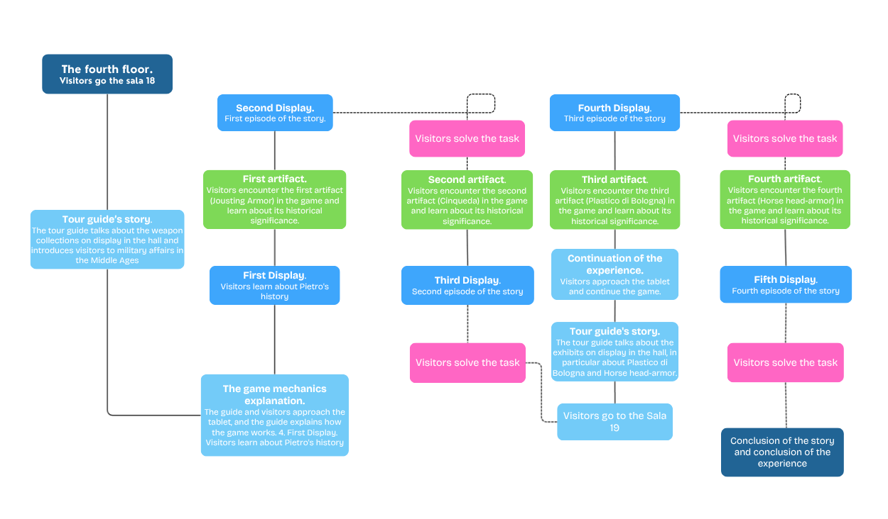
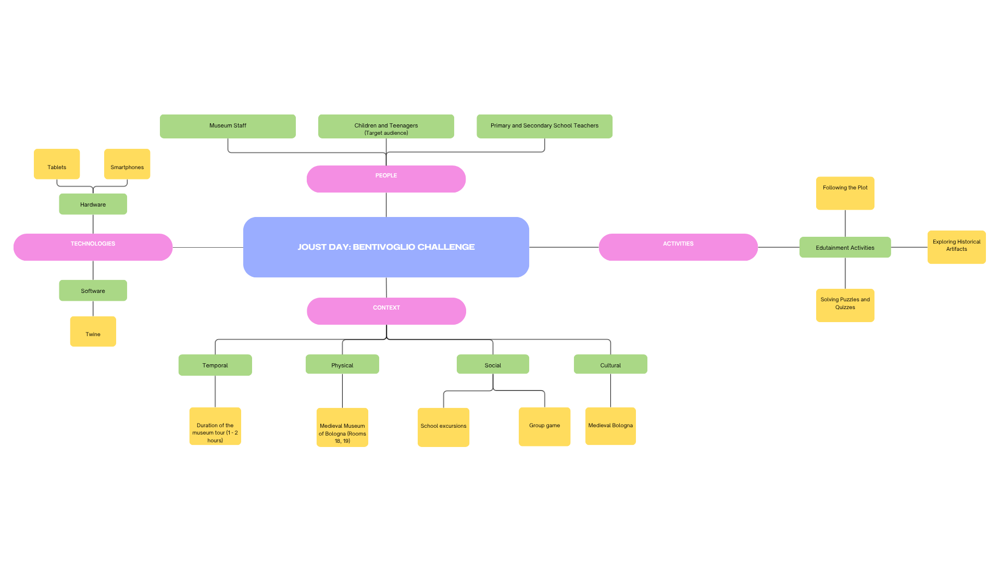

Context
The Medieval Civic Museum of Bologna presents Bologna’s medieval-to-Renaissance material culture: sculpture, bronzes, manuscripts, arms and armor, and civic /university monuments (including Boniface VIII). The museum’s core holdings come from Bologna’s historic civic and scholarly collecting traditions, above all the Cospi cabinet of curiosities, the Pelagio Palagi bequest donated to the city in 1860, and the Marsili arms collection. These holdings are augmented by University collections. Since 1985 the Medieval Civic Museum has been installed in Palazzo Ghisilardi(-Fava) on Via Manzoni 4, as part of the Musei Civici d’Arte Antica network of the City of Bologna. From 2013 it operated within the newly created Istituzione Bologna Musei (a single governance body uniting the city museums). In May 2022 that institution was dissolved and governance reverted to the municipality as Settore Musei Civici Bologna.
Weapons and Armor
Part of the museum's exhibition is devoted to military themes. Halls 18 and 19 display weapons and armor from the Middle Ages and Renaissance. Among the exhibits, you can see classic italian horse head armor, gilt-bronze rowel spurs, a tournament armor and others.
-
Institutional Goals
- Safeguard, research, and present Bologna’s medieval–Renaissance civic collections within a coordinated municipal museum system.
- Ensure broad public access through clear visiting info, services, accessibility guidance, and practical wayfinding.
- Deliver audience-centred education bringing all visitor types closer to heritage via visits, workshops, and edutainment.
-
Cognitive Goals
- Boost enchantment. The game makes the Middle Ages vivid and attractive, turning objects into tools in a mission.
- Immersive sounds, such as forge and hoofbeats, quick wins, and “aha” discoveries.
- Fitting armor pieces onto the knight, spotting and reading heraldic symbols on weapons.
- Drag-and-drop fits and tiny quizzes that trigger short animations or pop-ups.
- “Did you notice?” reveals that point to details in the real showcases.
- Solo or pair play that keeps the challenge light and replayable.
- Extend knowledge. Thanks to the game, schoolchildren will deepen their knowledge of medieval knighthood and particularly of knight tournaments.
They will learn:- What a tournament is and how it differs from war.
- Why the armor’s left side is reinforced, what the lance rest and stirrup-shoes do
- What a cinquedea is and what role motto played in medieval culture.
How they will learn it:- By assembling the knight’s armor, they will understand its function and how it was used in a tournament.
- By reading the motto on the cinquedea, they will learn about the importance of heraldry and symbolism in medieval culture.
- Increase empathy. By role-playing a squire, students step into a real person’s job on tournament day.
They will feel:- Time pressure before the tilt and the need to make quick, careful choices.
- Trade-offs between safety (more armor) and mobility (lighter gear).
- Responsibility for the rider and the horse within tournament rules.
How they will feel it:- Choosing gear with clear consequences (helpful/hindering hints after each pick).
- Completing a short pre-tilt checklist that simulates real prep steps.
- First-person prompts (“What would you adjust now?”) that frame decisions as theirs.
They will experience:
How it will happen:
Audience (Visitor Box)
The main target audience for this project is middle school students. This audience arrives with uneven prior knowledge, short attention spans, and strong preference for interactive, visual, and social learning. They respond best to clear goals, immediate feedback, and bite-size tasks that feel like play but deliver concrete takeaways. Access needs vary (language level, motor/attention differences), so content should be simple, multimodal, and keyboard/touch friendly. Session length of 7–10 minutes fits class visits, corridors between activities, and museum kiosks.
Motivations
Time travel. “Joust Day: Bentivoglio Challenge” lets students step into late-medieval Bologna for a few minutes. They play as a squire on tournament day and make simple, concrete choices, such as what armor piece goes where, how to prepare the rider, how to read a short motto on a dagger. Short on-screen notes and period sounds (forge, crowd, hoofbeats) build the mood without long texts. Each action links directly to a real object in Rooms 18–19, so after the game students can spot the same armor part or symbol in the display. In this way, the past feels close, understandable, and connected to what they see in the gallery.
Escapism. The experience offers a quick break from school routine: a 7–10 minute mission with clear goals, instant feedback, and a small “role badge” at the end. Mini-tasks, such as drag-and-drop the armor, find a heraldic sign, solve a tiny city-model puzzle create fast wins and keep attention high. Students can play solo or in pairs for a light sense of challenge. Texts stay short, hints appear when needed, and everything works with keyboard or touch. It feels like play, not a test, yet students leave with 2–3 facts they can immediately connect to the real exhibits.
Barriers
Lack of access to technology. Some pupils don't have a smartphone, data plan or a home computer. Our solution is the kiosk- first design of the “Joust Day: Bentivoglio Challenge”: it runs fully offline on a museum laptop/tablet with local media, so there are no log-ins, no accounts, no internet. Every interaction fits on a single screen with large buttons and simple drag-and-drop. For classes, one device can serve small groups; a facilitator-led mode projects the game while students decide choices together.
Low self esteem. Some pupils avoid overt challenges and feel uneasy in busy rooms. The game supports solo, quiet play with short, forgiving tasks, no timers by default, and gentle wording (“Try another fit” instead of “Wrong”). Hints appear progressively and difficulty never spikes. A non-competitive track hides scores and shows only completion badges. The UI allows pause/skip of any mini-task and offers headphone-friendly ambient audio with volume toggle.
Capabilities
Computer gaming. A short, goal-driven mini-game (“Joust Day: Bentivoglio Challenge”) with familiar patterns (levels, hints, achievement badge) make the museum experience more interesting for the young visitors. Players assemble the knight’s gear, read a short motto on the cinquedea, immersing in the atmosphere of chivalry.
Mobile apps. The epxerience is accessible through a mobile-friendly web (no install required) and, if desired, a lightweight PWA so teachers/students can “Add to Home Screen” for offline replay. After the kiosk session, a QR code lets visitors continue by themselves: revisit the armor puzzle, unlock “Did you notice?” facts for Rooms 18–19.
Computer software. It is also offered to the visitors an optional desktop package bundling the same experience for classrooms without stable internet, plus a Teacher Pack (PDF) with answer keys and discussion prompts. Educators download once and run locally for group play or homework preparation.
Devices
Tablet. Students are comfortable with touch-first tablets in landscape mode. The experience runs well in kiosk settings: large tap targets, simple gestures (tap, drag), and quick onboarding. Tablets support shared play (two learners side by side), headphones for audio, and offline/PWA use. So type of device is ideal for short, teacher-supervised sessions without log-ins or typing.
Smartphones. Most students carry smartphones and can scan a QR code to continue the experience after the gallery visit. They handle portrait layouts, short text, and quick interactions. The build prioritizes readable typography, one-hand taps, vibration cues, and audio with a mute toggle.
Gaming console. Many learners are fluent with controllers and game loops. The project maps key actions to a gamepad (select, confirm, back) and uses clear on-screen icons. On consoles with a web browser or on a PC connected to a TV with a gamepad the experience offers a living-room, large-screen mode for pairs or small groups.
THE PROJECT
CONCEPT

The aim of the project is to spark schoolchildren's initial interest in the history of medieval Italy, particularly the history of knighthood. To this end, young museum visitors are offered a gamified interactive experience that immerses them in the era of late medieval knighthood and allows them to expand their knowledge in a playful way.
The experience is a short, story-driven game that turns looking at exhibits into interacting with them. Students step into the role of a squire in late-medieval Bologna on the morning of a tournament. Their mission is to prepare the rider for the rincontro and earn the “Squire” badge before the tournament begins. The narrative unfolds across three micro-challenges tied to Rooms 18–19: (1) Dress the Knight (drag-and-drop armor puzzle that introduces the resta, reinforced left side, and staffoni), (2) Read the Blade (spot the Bentivoglio crest and motto on a cinquedea and decode its meaning), (3) City 1290 (tiny interaction with the late-13th-century city model to place key landmarks and understand the urban stage of public rituals), and (4) Prepare the horse (equip and adjust the testiera (horse head-armor), choosing the right setup for tournament use).It is assumed that the game is available to visitors via special tablets installed next to the exhibits. The experience is also available via a web application and software.
THE PROJECT
STUDY CASE
“Windsor Castle. Bring on the Battle!” is a free online interactive game set in the medieval past of Windsor Castle. It is developed by Royal Collection Trust and designed for children and families, it can be played on a web browser from anywhere. Through gameplay, gamers learn who built Windsor Castle and why, how castle defenses worked, and aspects of medieval warfare and knighthood.
“Clay through the Ages” is developed by The Hunt Museum in Limerick, together with Limerick Museum and the City Gallery. This gamified experience is designed for primary school children (roughly ages 6–12). Players take on the role of Truffles, a cartoon pig, and explore a top-down map of medieval Limerick City inspired by a 16th-century illustration.
THE PROJECT
REQUIREMENTS
MUST
- Create an engaging narrative that children and teenagers will find interesting to follow
- Add historical facts and information to this narrative that will broaden the audience's understanding of the Middle Ages.
SHOULD
- Make the game accessible in different languages for greater inclusivity.
- Provide a museum curator who would explain to the children how the game works and would be ready to answer any questions they might have about the game and the history of the Middle Ages as represented in the museum exhibits.
COULD
- Make it possible to play the game using augmented reality technologies for greater immersion.
- Create a more detailed version of the game, including narratives about more exhibits.
WON'T
- The game should not romanticise weapons and war.
- The proposed gamified experience should not distract attention from the actual museum exhibits, on the contrary, it should help young audiences become interested in the exhibits and the stories associated with them.
THE PROJECT
IDEATION
The combination of historical context and compelling plot in the narrative helps to establish an emotional connection between visitors and cultural heritage, which overall fosters a sense of care. The narrative, clearly divided into separate episodes, is smoothly percieved by visitors and allows them to easily remember the historical facts included in this narrative. Public displays installed next to the exhibits provide visitors with a convenient and simple way to enjoy a gamified experience.
Interaction Diagram
Conceptual Map
Persona Templates

IDEATION
Gamification Elements

THE PROJECT
Further Development
To ensure the DIVE project remains engaging, accurate, and educational, several key development and maintenance issues need to be addressed. A thorough validation process with subject matter experts ensures content accuracy and relevance. Historians and Egyptologists review all content to guarantee authenticity, supported by an advisory panel for ongoing guidance and review of new content.
Bi-annual content audits are scheduled to reflect the latest research and discoveries in Egyptology. A system for quick updates addresses significant new findings or corrections.
The narrative and interactive elements are regularly tested with children to measure engagement and educational impact, with educators providing feedback to improve educational effectiveness. User feedback is collected through surveys and feedback analysis to identify common themes and areas for improvement.
A Google Form is sent via email to teachers after the user experience to gather specific feedback on the narrative components and interactive experience with Amun. This form helps assess the effectiveness of storytelling and quizzes in engaging children. The feedback collected is analyzed to continuously improve and update the interactive experience.
Design Brief
Download the template and your filled PDF here:
Keep the Brief aligned with PACT, goals, and evaluation plan.
UX Scenario — Embedded Twine
This iframe loads the current prototype (replace with your exported Twine HTML when ready).
How to update
- Build your story in Twine (SugarCube or Harlowe).
- Export to “HTML (Playable)”.
- Replace
twine/story-placeholder.htmlwith your exported file using the same name.
Alternative (Twee workflow)
Edit twine/story.twee locally and compile with Tweego or Entweedle to produce HTML.